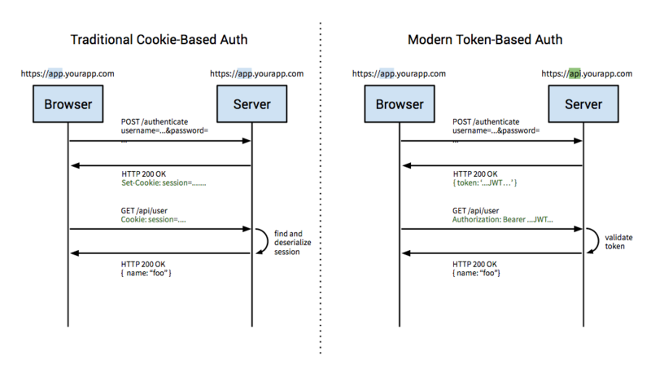

首先，服务器端的身份验证基本上有两类方式：一是基于 Cookie 的验证，一是基于 Token 的验证。选择哪一种要看你的实际情况。基于 Cookie 的验证历史悠久了，原理和做法无需赘言；近几年涌现了大量的公共 API 服务，它们基本上都使用了基于 Token 的验证，这主要是因为：
处理跨域资源分享（CORS）——虽然 Cookie＋CORS 也不是完全不可能，但是比较难搞
无状态性——有利于服务端扩展（伸缩性强）
C/S 解藕——服务器端和客户端可以完全分离，进而静态资源可以用 CDN 来处理，服务器端完全变成 API Service
CSRF Free——不依赖 Cookie，完全不担心跨域伪造请求攻击（这点尚有疑虑，有待考证）
……呃，忽然觉得有点跑题了，我的意思是你首先得选择一个验证方式，很明显基于 Token 的认证是趋势。
接下来，假定选择了基于 Token 认证这条路，你首先得搞明白 Token 是怎么玩的。简单地说： 客户端先发送正确的认证信息（比如电子邮件＋密码），服务器端检查 OK 之后生成一个 token 返回给客户端，之后客户端所有的请求都要包含这个 token，服务器端只需要验证该 token 是否有效即可 。这里有一张图，对比了 Cookie－based Authtication 和 Token－based Authentication，挺不错的：

好，按照 REST 的设计原则，我们需要一个 Endpoint 供用户来请求认证并获取 Token，比如像这样：
POST /authentication
在这里，“资源”就是认证（按照 REST 的要求，用名词来表示资源），使用 POST 方法去请求，附带数据为认证用的信息，返回结果看你的业务逻辑，但至少要有一个 token。客户端拿到 token 之后，先把它存起来（比如存到 SessionStorage 里），设置请求时的 HEADER 里 Authorization 的值为 Bearer
综上所述，这事和 REST 的关系也就是设计一个获取 Token 的 Endpoint 而已，没啥了不起的，剩下的事情都属于业务逻辑，该怎么写就看你的需求了。
API Key + Secret Key签名
比上一种跟复杂的一种方式就是用一个secret key去签名每一刻API URL请求，Amazon Web Services就是使用这种方式。当用户注册完后， 你会给用户2个keys：API Key（比如：username）和secret key（比如password），API key会附在每个请求url上面，但是secret key 不会。secret key是用来签名每个请求的。通常会加上另外一个参数比如（Signature）。
Amazon会把所有的请求信息作为请求的参数，然后按照参数名排序，再按照secret key进行hash。这个hash的值会作为一个新的参数（Signature）附加到请求的url上。在server端做相同的事情，获得所有的参数 （除了Signature），排序，用sercet key hash，如果这个值跟传过来的Signature参数的值相等的话，则认为这个请求是合法的。
完全可以照这个文档来开发。注意以下几点：
访问所有的API都需要签名Signature
Signature由用户Key+Secret Key+随机数+时间数进行hash计算而来。
Secret key分别保存在客户端和服务端，随机数、时间数、Signature通过header传到server，结合Secret Key进行hash，然后进行校验。
用户登录成功后，获得访问Token。Token作为客户端访问的凭证，可以设置一定的过期时间。
授权信息可以通过Token作为key，缓存在shiro的缓存中。
这篇文章的几张图很能说明原理，需要保存下来。